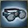

Spells |

|
 Spells |
 Spells |
 Spells |
 Spells |

|

|
 Spells |
 Spells |

|
 Spells |
 Spells |
 Spells |
|---|
| Class | Artificer - Dog | Barbarian | Bard | Cleric | Druid - Wolf | Favored Soul | Fighter | Monk | |||||||||||||
|---|---|---|---|---|---|---|---|---|---|---|---|---|---|---|---|---|---|---|---|---|---|
| AT | BE | FB | OS | Rav | SB | SS | WC | DD | RS | War | NW | SH | AoV | War | Ken | StD | Van | HeM | NiS | Shi | |
| Paladin | Patron | Ranger | Rogue | Sorcerer | Warlock | Wizard | |||||||||||||||
| KotC | SaD | Van | Har | AA | DWS | Tem | Ass | Mec | TA | Air | Earth | EK | Fire | Water | ES | SE | TS | AM | EK | PM | |
| Free to Play | Drow ? | Dwarf | Elf - AA | Halfling | Human |
|---|---|---|---|---|---|
| Premium Races | Dragonborn | Gnome | Half-Elf - AA | Half-Orc | Warforged |
| Iconic Heroes | Bladeforged | Deep Gnome | Morninglord - AA | PDK | Shadar-kai |
| General | Epic | Past Life | ||||||||||
|---|---|---|---|---|---|---|---|---|---|---|---|---|
Class |
 Dragonmark |
(General) |
Metamagic |
Racial |
Deity |
Epic |
Destiny |
Legendary |
Heroic |
Racial |
Epic |
Iconic |
| Weapons | Armor | Shields | ||||||||
|---|---|---|---|---|---|---|---|---|---|---|
| Weapons |
Heavy |
Medium |
Light |
Cloth |
Docents |
Tower |
Large |
Small |
Bucklers |
Orbs |
| Accessories | ||||||||||
|---|---|---|---|---|---|---|---|---|---|---|
| Belts |
Boots |
Bracers |
Cloaks |
Gloves |
 Goggles |
Helms |
Necklaces |
Rings |
Trinkets |
Rune Arms |
Augments (Purchasable) | Weapons: Unusual Mods, Enhanced Crit Profile, Swashbuckling | Named Item Sets | XP Needed: First Life, Second/Third/+ Life | Quests by Level | Items by Update
This Dashboard made in honor of EllisDee37 of the DDO forums, thanks again for everything you do. Questions or suggestions? Drop me a PM on github.